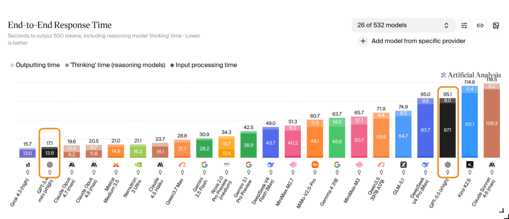
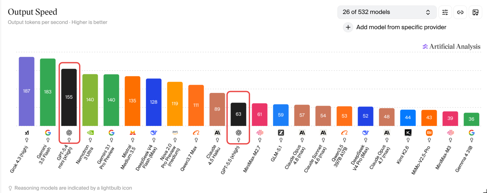
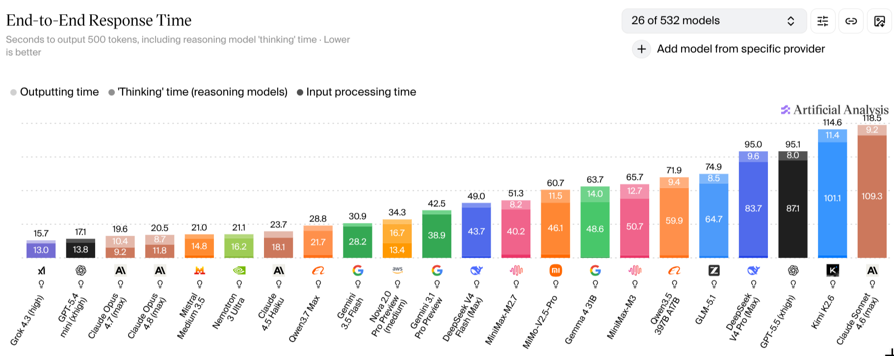

class: inverse, center, middle # GPT-5.5: The Complete Guide ## OpenAI's Latest Model Deep Dive ### Lucas Soares #### June 2026 --- # Table of Contents -- **1. GPT-5 Overview & Timeline** -- **2. Model Comparison & Performance** -- **3. Ok, great the model does well on a lot of benchmarks, but what is new about it?** -- **4. GPT-5 System Card** -- **5. Building with GPT-5: API & Integration** -- **6. GPT-5 Prompting Guide Complete Breakdown** -- --- class: center, middle # GPT-5 Overview & Timeline --- # GPT-5 → GPT-5.5 Release Timeline ## Version History (Aug 2025 → June 2026) -- - **GPT-5** — Aug 2025 (original launch) -- - **GPT-5.1** — Nov 2025 -- - **GPT-5.2** — Dec 2025 (`reasoning_effort` default → `none`; prompting guide deltas) -- - **GPT-5.4** — Mar 2026 (mini + nano variants) -- - **GPT-5.5** — Apr 2026 (current; default `reasoning_effort` reverts to `medium`) -- - **GPT-5.5-instant** — May 2026 (ChatGPT default) --- # GPT-5.5 Core Innovations -- - **Frontier Intelligence** — "a new class of intelligence for coding and professional work" -- - **Explicit Model Selection** — `gpt-5.5`, `gpt-5.4-mini`, `gpt-5.4-nano` -- - **Tunable Reasoning** — `none` → `low` → `medium` → `high` → `xhigh` -- - **Enhanced Tool Use** — shell, Skills, Connectors -- - **Multimodal** — text, image, audio, video --- class: center, middle <!-- ============================================= --> <!-- MODEL COMPARISON AND PERFORMANCE --> <!-- ============================================= --> # Model Comparison & Performance --- # GPT-5.5 — The Current Frontier Model -- OpenAI positions `gpt-5.5` as **"a new class of intelligence for coding and professional work"** — the current frontier model for complex professional tasks. -- - **1,050,000-token** context window; **128,000** max output tokens - Default `reasoning_effort` is `medium`; supports `none`, `low`, `medium`, `high`, `xhigh` - `gpt-5.5-pro` available for the hardest problems needing extended reasoning .footnote[Source: https://developers.openai.com/api/docs/models/gpt-5.5] --- # GPT-5.5 Model Line (Current Variants) ## Per 1M tokens, standard tier -- | Model | Input | Output | Context | |---|---|---|---| | `gpt-5.5` | $5.00 | $30.00 | 1,050,000 | | `gpt-5.5-pro` | $30.00 | $180.00 | 1,050,000 | | `gpt-5.5-instant` | $5.00 | $30.00 | ~1M | | `gpt-5.4-mini` | $0.75 | $4.50 | 400,000 | | `gpt-5.4-nano` | $0.20 | $1.25 | 400,000 | | `gpt-5.3-codex` | $1.75 | $14.00 | 400,000 | .footnote[Source: https://developers.openai.com/api/docs/models/gpt-5.5] --- --- class: center, middle # Ok, great the model does well on a lot of benchmarks, but what is new about it? --- class: center, middle # GPT-5 System Card --- # Notes on GPT-5's System Card -- **Real-time Router** *(historical architecture)* - Intelligently decided which model to use - Based on conversation type, complexity, and tools needed -- > **As of 2026, the router is historical architecture.** > `gpt-5.5-instant` is the new routing default for ChatGPT, and **API users pick their model explicitly** (`gpt-5.5`, `gpt-5.4-mini`, ...). --- <div style="display: flex; justify-content: center; align-items: center; height: 70vh;"> <img src="../assets/router-system-bad.png" width="60%"> </div> --- <div style="display: flex; justify-content: center; align-items: center; height: 70vh;"> <p></p> </div> --- # Notes on GPT-5's System Card **Real-time Router** - Intelligently decides which model to use - Based on conversation type, complexity, and tools needed **Smart and Fast Model (gpt-5-main)** - Handles most everyday questions efficiently - Optimized for speed and general capability --- <div style="justify-content: center; align-items: center; height: 70vh;"> <p></p> <p style="font-size: 14px; color: gray;">GPT-5.4-mini: 155 tok/s · GPT-5.5: 63 tok/s (xhigh reasoning)</p> </div> .footnote[Source: https://artificialanalysis.ai/] --- <div style="justify-content: center; align-items: center; height: 70vh;"> <p></p> <p style="font-size: 14px; color: gray;">GPT-5.4-mini: 17.1s · GPT-5.5: 95.1s end-to-end (incl. thinking time, 500 tokens)</p> </div> .footnote[Source: https://artificialanalysis.ai/] --- # Notes on GPT-5's System Card **Real-time Router** - Intelligently decides which model to use - Based on conversation type, complexity, and tools needed **Smart and Fast Model (gpt-5-main & gpt-5-mini)** - Handles most everyday questions efficiently - Optimized for speed and general capability **Deeper Reasoning Model (gpt-5-thinking)** - Tackles complex problems requiring deep thought - Produces long internal chains of reasoning - Can refine strategies and recognize mistakes --- # Safety Approach -- ## Traditional Safety Approach - Binary refusal (allow/deny) - Overly cautious, often blocks helpful answers - Lacks nuance for complex or dual-use queries -- ## GPT-5 Safety-Helpfulness - Nuanced, context-aware responses - Balances safety with helpfulness - Enables more informative answers while respecting policy .footnote[Source: https://cdn.openai.com/pdf/be60c07b-6bc2-4f54-bcee-4141e1d6c69a/gpt-5-safe_completions.pdf] --- # Key Benefits -- - **Maximizes helpfulness** while maintaining safety policy constraints -- - **Particularly effective** for dual-use cases (biology, cybersecurity) -- - **Nuanced responses** instead of blanket refusals -- - **Demonstrated improvements** in both safety and helpfulness .footnote[Source: https://cdn.openai.com/pdf/be60c07b-6bc2-4f54-bcee-4141e1d6c69a/gpt-5-safe_completions.pdf] --- <div style="display: flex; justify-content: center; align-items: center; height: 70vh;"> <img src="../assets/safety-helpfulness-comparison-gpt-5-vs-openai-o3.png" width="90%"> </div> .footnote[Source: https://openai.com/index/gpt-5-system-card/#:~:text=The%20safety-helpfulness%20optimization%20technique,are%20tuned%20to%20the%20system.] --- class: center, middle <h1> <span style="background-color: lightgreen"> Demo: My Initial Experiments with GPT-5 </span> </h1> --- # Interactive Learning Applications ## Real GPT-5 Projects -- ### **Educational Tools Built**: - [**Transformers Learning App**](https://chatgpt.com/canvas/shared/68950ffbb9f08191b4ed73a86e123119) - Interactive transformer architecture visualization - [**Embeddings Learning App**](https://chatgpt.com/canvas/shared/689512f7e6e4819199e1536602992bf5) - Hands-on embedding exploration - [**Basketball Coach App**](https://chatgpt.com/s/t_68951bd734b08191ae3b9002cd304413) - AI-powered sports coaching - [**iPad Drawing App**](https://chatgpt.com/canvas/shared/68953560217c8191a6360ebde7c1d693) - Touch-optimized creative tool --- # Advanced Web Applications ## Cutting-Edge Implementations -- ### **Interactive Experiences**: - [**Context Rot Paper → Interactive Experience**](https://chatgpt.com/canvas/shared/689527fc5eac8191ae7b0e1170e3bbb1) - Academic paper transformation - [**MediaPipe Music App**](https://chatgpt.com/share/6895403c-87b0-8004-a2b1-8a4fa09eab38) - Hand tracking music interface -- ### **Research Tools**: - [**Prompt Experiments**](https://chatgpt.com/share/68951e12-1d88-8004-8f36-3ef9965c43f8) - Python scripting and analysis - [**Semantic Reader App**](https://claude.ai/public/artifacts/ac58dc2c-1a4b-46db-93fc-3b282e61b045) - Claude comparison project --- # Observations: GPT-5 Limitations ## Honest Assessment -- ### **Intelligence Gaps Identified**: - [**Logic Problem Example**](https://chatgpt.com/share/6895186f-33c0-8004-82b6-d61fdc45d5f3) - Basic reasoning failure - [**Melting App Fail**](https://chatgpt.com/share/68953808-7b00-8004-8a0f-557ceb889375) - Physical simulation errors --- class: center, middle # Building with GPT-5: API & Integration --- <div style="text-align: center;margin-top: 70px;"> <img src="../assets/openai-responses-api-chat-completions-code-example.png" width="800"> <p style="font-size: 14px; color: gray;"> <a href="https://openai.com/api/" target="_blank" style="color: gray; text-decoration: underline;">Responses API</a> </p> </div> --- # Conversations API — State Without the Plumbing -- **Before (legacy):** manual `previous_response_id` chaining ```python r1 = client.responses.create(model="gpt-5.5", input="tell me a joke") r2 = client.responses.create( model="gpt-5.5", previous_response_id=r1.id, # chain by hand input="explain why this is funny", ) ``` -- **After (current):** a durable conversation object ```python convo = client.conversations.create() # persistent ID client.responses.create( model="gpt-5.5", conversation=convo.id, store=True, # persists indefinitely input="tell me a joke", ) ``` -- - **Server-side compaction** — `/responses/compact` (also inline via `context_management` / `compact_threshold`) shrinks the context you send each turn - **`phase` parameter** — labels messages `commentary` (in-progress narration) vs `final_answer` (the deliverable) .footnote[Source: https://developers.openai.com/api/docs/guides/conversation-state · https://developers.openai.com/api/docs/changelog] --- <div style="text-align: center;margin-top: 70px;"> <img src="../assets/openai-chat-completions-api-code-example.png" width="800"> <p style="font-size: 14px; color: gray;"> <a href="https://openai.com/api/" target="_blank" style="color: gray; text-decoration: underline;">Chat Completions API</a> </p> </div> --- <div style="text-align: center;margin-top: 70px;"> <img src="../assets/openai-realtime-api-websocket-code-example.png" width="800"> <p style="font-size: 14px; color: gray;"> <a href="https://openai.com/api/" target="_blank" style="color: gray; text-decoration: underline;">Realtime API</a> </p> </div> --- <div style="text-align: center;margin-top: 70px;"> <img src="../assets/openai-batch-api-asynchronous-code-example.png" width="800"> <p style="font-size: 14px; color: gray;"> <a href="https://openai.com/api/" target="_blank" style="color: gray; text-decoration: underline;">Batch API</a> </p> </div> --- # Supported Model Variants -- **gpt-5** (flagship model) - Maximum capability and performance - Best for complex reasoning tasks -- **gpt-5-mini** (cost-effective) - 83% cost reduction vs GPT-4 - Nearly half the latency - Excellent price-performance ratio -- **gpt-5-nano** (ultra-fast) - Optimized for speed - Lightweight tasks and high-throughput scenarios --- # GPT-5 Pricing Considerations ## Cost-Performance Analysis -- ### **Pricing Tiers**: - **Premium pricing** for maximum capability - **GPT-5**: 1.25$/M input tokens; 10$/M output tokens - **GPT-5-mini**: $0.25/M input tokens ; $2.0/M output tokens - **GPT-5-nano**: $0.05/M input tokens ; $0.4/M output tokens --- # GPT-5 Pricing Considerations ## Cost-Performance Analysis -- ### **Optimization Strategies**: - Use reasoning effort "minimal" for simple tasks - Leverage router system for automatic optimization - Choose appropriate model size for workload - Implement smart caching strategies --- class: center, middle <h1> <span style="background-color: lightgreen"> Demo: Getting Started with GPT-5 </span> </h1> --- class: inverse, center, middle # Agents SDK --- # The 7 Agents SDK Primitives -- - **Agent** — the LLM config: instructions + tools; plans, calls tools, keeps state -- - **Runner** — executes the agent loop; manages streaming, state, result handling -- - **Tools** — function tools (`@function_tool`), hosted tools, and MCP servers -- - **Handoffs** — delegate to specialist agents; you control which agent replies -- - **Guardrails** — input/output validation; pause/block risky ops, add human review -- - **Sessions** — automatic conversation-history management, resumable across turns -- - **Tracing** — built-in run tracking to view, debug, and optimize workflows .footnote[Source: [openai-agents-python](https://github.com/openai/openai-agents-python) · [Agents guide](https://developers.openai.com/api/docs/guides/agents)] --- # Agents SDK — Minimal Example ## Define an Agent, run it with streaming ```python from agents import Agent, Runner agent = Agent( name="Assistant", model="gpt-5.5", instructions="Help users with their tasks", ) result = Runner.run_streamed(agent, "Summarize today's standup notes") async for event in result.stream_events(): print(event) ``` .footnote[Source: [openai-agents-python](https://github.com/openai/openai-agents-python)] --- # Agents SDK — Handoffs ## Triage agent delegates to a specialist ```python from agents import Agent, Runner refunds = Agent( name="Refunds Specialist", model="gpt-5.5", instructions="Handle refund requests end to end.", ) triage = Agent( name="Triage", model="gpt-5.4-mini", instructions="Route the user. Hand off refund issues to the specialist.", handoffs=[refunds], # explicit delegation ) result = Runner.run_sync(triage, "I want a refund for order #4821") print(result.final_output) ``` .footnote[Source: [openai-agents-python](https://github.com/openai/openai-agents-python) · [Agents guide](https://developers.openai.com/api/docs/guides/agents)] --- class: center, middle # Q&A & Break --- class: center, middle # GPT-5 Prompting Guide Complete Breakdown --- <div style="display: flex; justify-content: center; align-items: center; height: 70vh;"> <img src="../assets/agentic-workflow-spectrum.png" width="80%"> </div> .footnote[Source: [GPT-5 Prompting Guide](https://cookbook.openai.com/examples/gpt-5/gpt-5_prompting_guide)] --- # What's New: GPT-5.2 Prompting Deltas (1/3) ## `output_verbosity_spec` -- **What it is:** the original guide had a single coarse `verbosity` API knob (low/medium/high). GPT-5.2 replaces it with an explicit, **in-prompt verbosity contract**. -- **Example:** ```text <output_verbosity_spec> Default: 3–6 sentences OR ≤5 bullets for typical answers. Break responses into digestible chunks. Avoid long narrative paragraphs. </output_verbosity_spec> ``` .footnote[Source: [GPT-5.2 Prompting Guide](https://developers.openai.com/cookbook/examples/gpt-5/gpt-5-2_prompting_guide)] --- # What's New: GPT-5.2 Prompting Deltas (2/3) ## Scope Discipline -- **What it is:** a dedicated guardrail that counters GPT-5.2's tendency to produce **more** code/features than the minimal spec. -- **Example:** ```text <scope_discipline> Implement EXACTLY and ONLY what the user requests. No extra features, no added components, no UX embellishments. </scope_discipline> ``` .footnote[Source: [GPT-5.2 Prompting Guide](https://developers.openai.com/cookbook/examples/gpt-5/gpt-5-2_prompting_guide)] --- # What's New: GPT-5.2 Prompting Deltas (3/3) ## Long-context Re-grounding + Uncertainty Self-checks -- **Long-context re-grounding** — for inputs >~10k tokens: - Produce a short internal outline - Re-state the user's constraints explicitly before answering - Anchor claims to specific sections -- **Uncertainty self-checks** — in high-risk domains, prompt the model to flag, before finalizing: - Unstated assumptions - Specific numbers or claims not grounded in the input - Overly strong language .footnote[Source: [GPT-5.2 Prompting Guide](https://developers.openai.com/cookbook/examples/gpt-5/gpt-5-2_prompting_guide)] --- # Controlling Agentic Eagerness ## Less Agentic Eagerness -- **Reduce Context Gathering & Exploration:** ```python # Set reasoning_effort to lower reasoning_effort = "minimal" # Improves efficiency, reduces latency ``` -- **Specify Clear Exploration Criteria:** ```xml <context_gathering> Goal: Find the specific function definition Method: Search only in src/ directory Stop: When function is found or after 2 searches </context_gathering> ``` -- **Benefits:** - Faster response times - More predictable behavior - Lower token usage --- # Controlling Agentic Eagerness ## More Agentic Eagerness -- **Encourage Persistence:** ```xml <persistence> Continue exploring until the task is fully complete. Do not stop at partial solutions. Verify all edge cases before concluding. </persistence> ``` -- **Increase Reasoning Depth:** ```python reasoning_effort = "high" # Default is "medium" ``` -- **Tool Preambles for Progress Updates:** - Thorough descriptions of each step - Continuous user updates on task progress - Detailed explanations of decision-making --- # Performance Optimization Techniques ## Context Reuse & Efficiency -- ### **Leverage Previous Reasoning Traces** - Reuse context across turns instead of rebuilding history by hand - **Current best practice:** durable conversation objects (`conversations.create()` + `store=True`) over manual `previous_response_id` chaining -- ### Live demo → `notebooks/00-introduction-openai-responses-api.ipynb` Run the Responses API context-reuse and conversation-state examples hands-on. .footnote[Source: [OpenAI Responses API — Conversation State](https://developers.openai.com/api/docs/guides/conversation-state)] --- # The Hidden Cost of Bad Prompts - GPT-5's stricter instruction following amplifies poor prompts -- - Contradictory instructions lead to inefficient Reasoning -- - Always resolve instruction hierarchy conflicts -- ### **Example: Resolving Conflicts** ``` ❌ "Be concise but provide detailed explanations" ✅ "Provide a 2-sentence summary, then detailed bullet points" ``` .footnote[Source: [GPT-5 Prompting Guide - Instruction Hierarchy](https://cookbook.openai.com/examples/gpt-5/gpt-5_prompting_guide#instruction-hierarchy)] --- # GPT-5 Coding Excellence ## Optimal Framework Stack -- <div style="display: grid; grid-template-columns: 1fr 1fr; gap: 2rem;"> <div> <strong>Frontend Frameworks:</strong> <ul> <li>Next.js (TypeScript)</li> <li>React</li> <li>HTML</li> </ul> <strong>Styling/UI:</strong> <ul> <li>Tailwind CSS</li> <li>shadcn/ui</li> <li>Radix Themes</li> </ul> </div> <div> <strong>Icons & Animation:</strong> <ul> <li>Material Symbols</li> <li>Heroicons, Lucide</li> <li>Motion library</li> </ul> <strong>Typography:</strong> <ul> <li>Sans Serif, Inter</li> <li>Geist, Mona Sans</li> <li>IBM Plex Sans, Manrope</li> </ul> </div> </div> --- # Enhanced Code Generation Techniques ## Self-Reflection & Structured Guidance -- ### **Improve 0-1 Shot App Generation:** ```xml <self-reflection> Review the generated code for: - Component reusability - Error handling completeness - Performance optimizations Score each aspect 1-10 and explain improvements </self-reflection> ``` .footnote[Source: [GPT-5 Prompting Guide - Codebase Design](https://cookbook.openai.com/examples/gpt-5/gpt-5_prompting_guide#matching-codebase-design)] --- # Enhanced Code Generation Techniques ## Self-Reflection & Structured Guidance ### **Strict Design Standards Adherence:** ```xml <ui_ux_best_practices> - Visual Hierarchy: Limit typography to 4–5 font sizes and weights for consistent hierarchy; use `text-xs` for captions and annotations; avoid `text-xl` unless for hero or major headings. - Color Usage: Use 1 neutral base (e.g., `zinc`) and up to 2 accent colors. - Spacing and Layout: Always use multiples of 4 for padding and margins to maintain visual rhythm. Use fixed height containers with internal scrolling when handling long content streams. - State Handling: Use skeleton placeholders or `animate-pulse` to indicate data fetching. Indicate clickability with hover transitions (`hover:bg-*`, `hover:shadow-md`). - Accessibility: Use semantic HTML and ARIA roles where appropriate. Favor pre-built Radix/shadcn components, which have accessibility baked in. </ui_ux_best_practices> ``` .footnote[Source: [GPT-5 Prompting Guide - Codebase Design](https://cookbook.openai.com/examples/gpt-5/gpt-5_prompting_guide#matching-codebase-design)] --- # Ecosystem Support - **GitHub Copilot**: - Available across all paid plans - VS Code, GitHub.com, GitHub Mobile - Enhanced multi-file changes/refactors -- - **Cursor Feedback**: - "Smartest coding model we've used" - Optimized for interactive development -- - **Third-Party Tools**: - Windsurf integration Codex CLI optimization - Fine-tuned for agentic coding -- - **GPT-5 Codex**: - Specialized for software engineering. - Real-world task training. - Complex independent task handling --- # Recommended Prompting Patterns -- **1. Brief Thought Process Summary** ```markdown "Start your response with 2-3 bullet points summarizing your reasoning approach before the full answer" ``` -- **2. Thorough Tool-Calling Preambles** ```markdown "Before each tool use, explain: what you're doing, why, and what you expect to find" ``` -- **3. Disambiguated Tool Instructions** ```markdown "Search for 'class UserAuth' in authentication files only, stop after finding the implementation, not just imports" ``` -- **4. Planned Execution at Minimal Reasoning** ```markdown "First, outline your approach in 3 steps. Then execute each step completely before moving on." ``` --- # Markdown Formatting & Output Control ## Professional Output Formatting -- ### **Semantic Markdown Usage:** ```markdown Use Markdown **only where semantically correct**: - `inline code` for functions, variables - ```code fences``` for code blocks - Lists and tables for structured data - \( and \) for inline math - \[ and \] for block math ``` .footnote[Source: [GPT-5 Prompting Guide - Markdown](https://cookbook.openai.com/examples/gpt-5/gpt-5_prompting_guide#markdown-formatting)] --- # Metaprompting Techniques ## Teaching GPT-5 to Optimize Itself -- ### **The Metaprompt Pattern:** ```text When asked to optimize prompts, give answers from your own perspective - explain what specific phrases could be added to, or deleted from, this prompt to more consistently elicit the desired behavior or prevent the undesired behavior. Here's a prompt: [PROMPT] The desired behavior is: [DO DESIRED BEHAVIOR] But instead it: [DOES UNDESIRED BEHAVIOR] While keeping the existing prompt intact as much as possible, what minimal edits/additions would you make to encourage more consistent desired behavior? ``` .footnote[Source: [GPT-5 Prompting Guide - Metaprompting](https://cookbook.openai.com/examples/gpt-5/gpt-5_prompting_guide#metaprompting)] --- class: center, middle <h1> <span style="background-color: lightgreen"> Demo: Prompting Guide for GPT-5 - Hands-on </span> </h1> --- class: center, middle <h1> <span style="background-color: lightgreen"> Demo: Prompt Optimizer Tool </span> </h1> .footnote[Source: [Prompt Optimizer Tool](https://platform.openai.com/chat/edit?models=gpt-5&optimize=true)] --- class: center, middle # Q&A & Break --- class: center, middle <h1> <span style="background-color: lightgreen"> Demo: Building GPT-5 Powered Apps </span> </h1> --- class: center, middle # Q&A & Break --- # Key Takeaways -- - **GPT-5's unified system** with routering intelligence represents a paradigm shift -- - **Preparedness Framework** and safe-completions training set new industry standards -- - **State-of-the-art coding capabilities** with 74.9% on SWE-bench -- - **New parameters** (verbosity, reasoning effort) provide unprecedented control -- - **Native support** across text, image, audio, and video modalities -- - **Comprehensive API ecosystem** with built-in tools and MCP integration -- --- # What NOT to Use (Deprecated as of June 2026) -- - **Agent Builder** (visual workflow tool) — sunset **Nov 30, 2026** - Migrate to the **Agents SDK** or ChatGPT Workspace Agents -- - **Evals platform** — **read-only Oct 31, 2026**, full shutdown **Nov 30, 2026** - Move to the SDK's tracing → eval loop, or code-based evals -- - **Reusable prompt objects** (`v1/prompts`) — shutdown **Nov 30, 2026** - Move prompt content into application code -- > These were announced deprecated **Jun 3, 2026** — don't build new workflows on them. .footnote[Source: https://developers.openai.com/api/docs/deprecations] --- # Next Steps & Resources ## Continue Your GPT-5 Journey ### **Official Documentation** - [GPT-5 System Card](https://openai.com/index/gpt-5-system-card/) - [GPT-5 Prompting Guide](https://cookbook.openai.com/examples/gpt-5/gpt-5_prompting_guide) - [OpenAI API Documentation](https://platform.openai.com/docs/overview) ### **Hands-on Practice** - [Prompt Optimizer Tool](https://platform.openai.com/chat/edit?models=gpt-5&optimize=true) - [GPT-5 Frontend Examples](https://cookbook.openai.com/examples/gpt-5/gpt-5_frontend) - [New Parameters Guide](https://cookbook.openai.com/examples/gpt-5/gpt-5_new_params_and_tools) --- # Connect With Me ## 📚 [Course materials](https://github.com/EnkrateiaLucca/gpt5-course.git) ## 🔗 [LinkedIn](https://www.linkedin.com/in/lucas-soares-969044167/) ## 🐦 [Twitter/X - @LucasEnkrateia](https://x.com/LucasEnkrateia) ## 📺 [YouTube - @automatalearninglab](https://www.youtube.com/@automatalearninglab) ## 📧 Email: lucasenkrateia@gmail.com ---